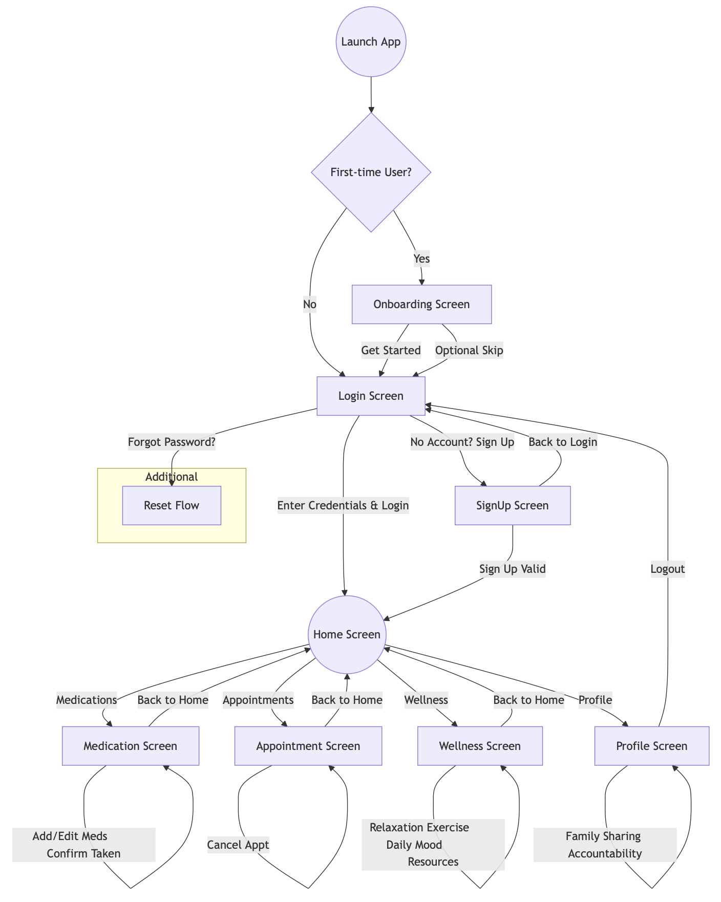
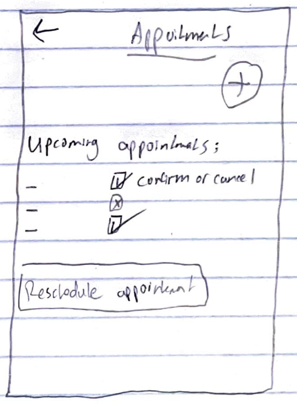
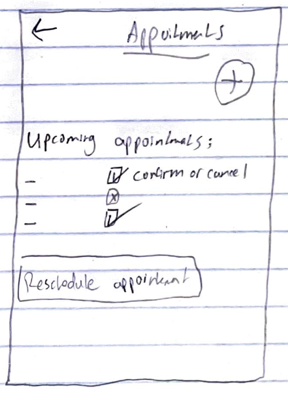
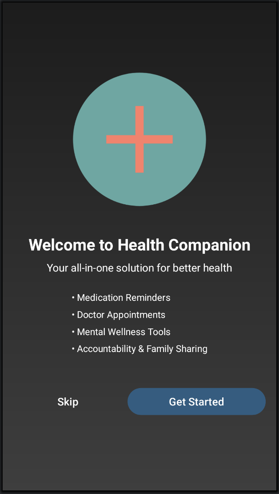
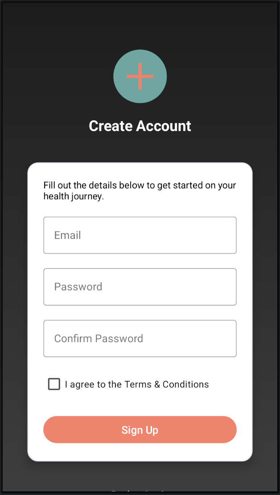
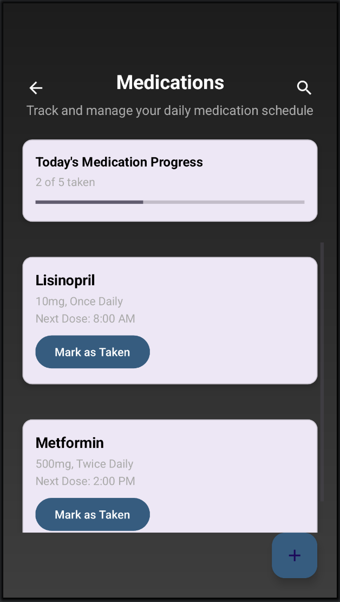
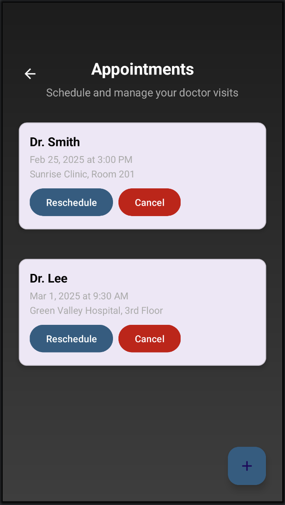
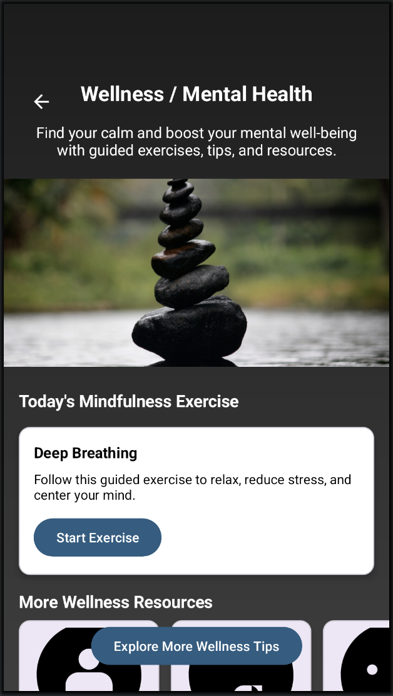
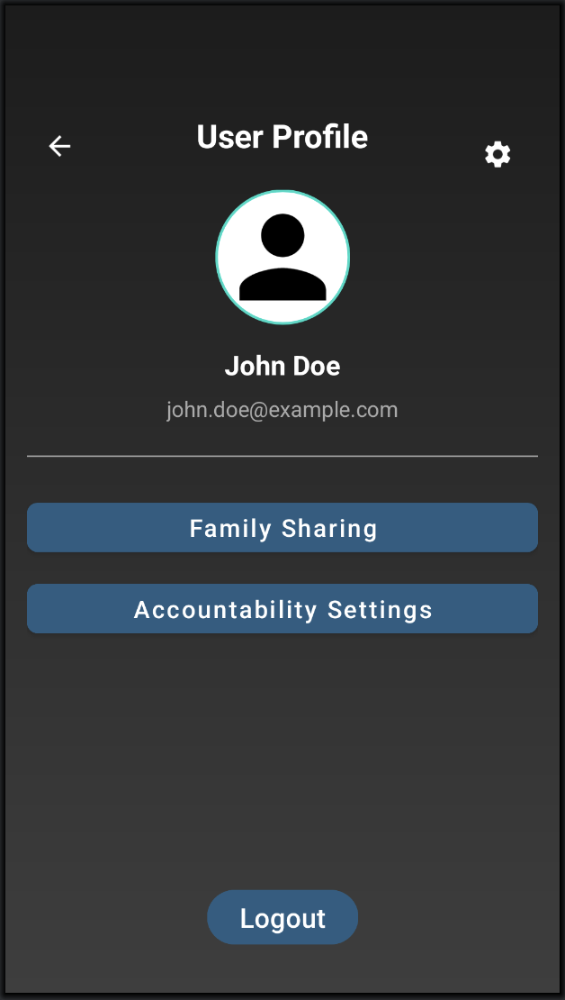

1. Introduction
Managing chronic health conditions often involves juggling multiple medications, doctor appointments, nutrition tracking, and mental wellness checks. The Health Companion Super App aims to simplify this process by consolidating these tasks into one seamless platform, fostering better health outcomes and improved user adherence.
Scope: This case study documents the research, design, and testing process behind building an MVP (Minimum Viable Product) for the Health Companion Super App. The app features medication reminders, appointment scheduling, and additional wellness tools (e.g., mental health support, accountability features).
Objective: By focusing on a user-centered design approach, we aimed to identify the real needs of individuals with chronic conditions, alleviate common pain points, and offer them a friendly, intuitive solution to stay on top of their health. This includes:
- Timely medication tracking and reminders
- Seamless doctor appointment scheduling and rescheduling
- Holistic wellness support, including mental and emotional health resources
- Accessible user flows that minimize complexity for all age groups
This case study follows a structured UX/UI design process, highlighting how we used data-driven insights to build a product that truly resonates with the target audience.
2. User Research
Our primary goal was to gather in-depth knowledge of users with chronic conditions and their relationship with digital tools that track health information. We used a mixed-methods approach, combining both quantitative and qualitative research:
- Online Survey (40 respondents): Focused on daily medication habits, frequency of missed doses, appointment scheduling methods, interest in mental wellness features, and preferred notification types.
- In-depth Interviews (5 participants): Delved deeper into personal challenges, emotional triggers (e.g., stress when scheduling appointments), and coping mechanisms. Participants were 30–60 years old with chronic conditions such as diabetes, hypertension, and chronic migraines.
- Secondary Research: Reviewed existing health apps (MyChart, Medisafe, Talkspace) and medical journals to understand best practices and potential pitfalls in chronic disease management.
Key Insights from Research:
- App Overload: Users dislike juggling multiple apps for different health tasks. A single integrated solution is preferred.
- Medication Adherence: Over 60% of participants admitted missing at least one dose per week, highlighting a strong need for intuitive reminders.
- Mental Health Integration: A notable portion of users expressed interest in mental wellness resources within the same app, supporting stress management.
- Communication with Healthcare Professionals: Slow or unclear communication with doctors was a frequent complaint.
- Accessibility & Usability: Many older adults found high-complexity apps difficult to navigate. A simple, clear UI is essential.

Medication Tracking Methods
70% use manual methods (like pillboxes), while 30% rely on mobile apps.

Frequency of Forgotten Doses
60% frequently forget at least one dose per week. Only 15% rarely forget.

Most Requested Features
- Appointment scheduling & easy rescheduling (65%)
- Simplified medication reminders (58%)
- Family sharing & accountability (35%)
- Mental wellness tips (30%)
Top requested features from user survey
In summary, users demanded a single, user-friendly experience that bundles medication tracking and appointment scheduling while offering mental health resources. Our next step was to translate these insights into personas that would guide our design decisions.
3. Personas
Based on our research, we developed three personas representing key user segments. Each persona encapsulates different goals, motivations, and pain points, ensuring that our design solutions address a diverse range of needs.
John, 57 • Hypertension & High Cholesterol
Goals: Track blood pressure meds, reduce hospital visits, manage diet tips.
Pain Points: Forgets medication doses, struggles with complicated apps, wants to share data with family doctor easily.
Motivations: Maintaining independence, ensuring stable health for family’s peace of mind, saving time on complex scheduling processes.
Alicia, 33 • Migraines & Work-Life Balance
Goals: Quickly log migraines, set medication reminders, find stress management tools.
Pain Points: Juggling a busy schedule, needs fast, on-the-go solutions, doesn't want complicated sign-in flows every time.
Motivations: Minimizing downtime due to migraines, proactively addressing triggers, fitting health tasks into a fast-paced lifestyle.
Carlos, 41 • Type 2 Diabetes
Goals: Track insulin doses and diet, schedule regular checkups, sync data with family.
Pain Points: Misses insulin doses due to busy shift schedule, needs real-time push notifications, uncertain about data privacy.
Motivations: Maintaining stable glucose levels, reassuring family members, improving diet through daily logging of food intake and sugar levels.
Each persona guided decisions around feature prioritization, information architecture, and interface design. We ensured our design would be intuitive for both the tech-savvy younger demographic (Alicia) and older adults who struggle with more complex technology (John), while still meeting specialized needs (like those of Carlos).
4. User Journey Map
To understand the typical process a user undergoes when interacting with our app, we created a journey map reflecting key stages and emotional states. For illustration, this journey map focuses on John’s experience from the moment he realizes he needs to refill his blood pressure meds to scheduling a follow-up with his cardiologist.

Key stages: Awareness → App Access → Medication Tracking → Appointment Scheduling → Follow-up
Breakdown of John’s Journey:
- Awareness: John hears from his doctor about a new app to help manage chronic conditions. He’s cautious but curious.
- Onboarding & Setup: John downloads the app and sees a simple onboarding flow that explains how to enter his medication details. He worries it might be too technical, but quick tutorial tips guide him through the process.
- Medication Tracking: Once set up, John receives daily reminders to log his blood pressure meds. He appreciates the push notifications but occasionally forgets to open the app.
- Doctor Communication: John notices he can send simple status updates or questions to his healthcare professional. Initially, he’s uncertain how to phrase them, but the app’s suggested templates help him out.
- Appointment Booking: John tries scheduling a routine check-up in-app. The limited slot availability irritates him, but the app suggests alternatives, reducing frustration.
- Follow-up & Long-Term Engagement: As John grows comfortable with daily usage, he begins exploring wellness tips and even tries some relaxation exercises. Over time, he feels more confident managing his health.
By mapping each stage—alongside John’s emotions, pain points, and opportunities—we identified friction points (e.g., confusion during sign-up, difficulty scheduling appointments, fear of complicated technology) and designed specific solutions (e.g., intuitive onboarding, appointment scheduling alternatives, simple UI).
5. User Flow
Below is a detailed flowchart outlining the entire user path from Onboarding and Sign-Up or Login, to the Home Dashboard, then navigating to Medications, Appointments, Wellness, and Profile. It also highlights key sub-actions like adding medication reminders, scheduling/rescheduling appointments, and more.
Start → Onboarding → Login/Signup → Home → Medications / Appointments / Wellness / Profile
Flow Rationale:
- Onboarding: If first-time user, they see a quick overview and can opt to skip or proceed with a tutorial. This accommodates users with varying familiarity levels.
- Login vs. Sign-Up: New users create an account, returning users directly log in. “Forgot Password” flow is clearly accessible from the login screen.
- Home Screen: Displays quick links to major features (Medication, Appointment, Wellness, Profile). Users can easily jump back to the home screen without confusion.
- Medication Screen: Facilitates adding/editing medication details, logging doses, setting push reminders, and confirming taken doses.
- Appointment Screen: Schedules new check-ups, reschedules or cancels existing ones, and integrates with push notifications for reminders.
- Wellness Screen: Offers mental health exercises, daily mood tracking, and curated resources to reduce stress and anxiety.
- Profile Screen: Houses user info, family-sharing options, accountability settings, and a logout function.
This user flow ensures minimal friction and quick access to essential features, thus promoting consistent usage over time.
6. Wireframes & High-Fidelity Screens
Our design process followed an iterative approach. We began with low-fidelity wireframes to validate layout and essential features, then progressively refined these into high-fidelity mockups incorporating a consistent color palette, branding elements, and final interaction details.
Low-Fidelity Wireframes
At the low-fidelity stage, we sketched basic layouts in pen-and-paper form and later replicated them in Figma. Our primary focus was understanding the user’s navigation path and flow feasibility, rather than final visual details. We conducted quick internal reviews to confirm that the screens aligned with our main use cases (e.g., setting a medication reminder or scheduling an appointment).

 

Tested for basic flow and navigation. Minimal design to focus on layout and usability.
High-Fidelity Mockups
After refining the wireframes based on initial feedback and usability considerations, we introduced brand colors, typography, and iconography. We ensured color contrast met accessibility guidelines (WCAG 2.1 AA at minimum), especially important for older adults with visual impairments.


Incorporates brand styling, intuitive icons, and clear call-to-action buttons.
Key Design Decisions:
- Consistent Navigation: Tabs and menu items remain in predictable locations to reduce cognitive load.
- Legible Typography: We selected a clean, sans-serif font with good readability, even at smaller sizes.
- Color Coding: Medication reminders have distinct accent colors to stand out. Appointment or scheduling screens use a calmer hue to convey organization.
- Microcopy & Iconography: Clear, concise labels and intuitive icons help guide users.
7. Usability Testing
After creating our high-fidelity prototype, we conducted two rounds of usability testing. The first round was internal testing with five team members simulating user tasks to catch major usability flaws. The second round was external testing with 6 participants drawn from our target audience (in line with our personas) to gather real-world feedback.
Test Goals & Methodology:
- Assess whether users could easily create an account or log in without confusion.
- Measure how quickly users could set a new medication reminder and confirm the dose taken.
- Evaluate the ease of scheduling an appointment and how users handle rescheduling or canceling.
- Observe interactions with the mental wellness features to gauge interest and discover any friction points in discovering or accessing them.
- Identify any navigational or labeling issues that hinder user flow.
Each test participant received a scenario-based script and performed tasks while thinking out loud. We recorded screen interactions (with permission) and took detailed notes on user pain points, confusion, or suggestions.
Key Findings
Below is a summary of the most significant results from our external test group:
| Feature Tested | Success Rate | Observations | Proposed Changes |
|---|---|---|---|
| Account Creation | 5/6 (83%) | One user missed the “confirm password” field | Add real-time validation, highlight missing fields |
| Medication Reminder | 6/6 (100%) | All found the “Add Medication” button easily | Consider adding a quick tutorial for first-time users |
| Appointment Scheduling | 4/6 (66%) | Two users confused about “Reschedule” vs “New Appointment” flow | Combine “Schedule” & “Reschedule” under one “Manage Appointments” screen |
| Mental Wellness Exercise | 6/6 (100%) | Users appreciated quick access & short instructions | Push more variety of exercises in future updates |
Iterative Changes Implemented:
- Consolidated Appointment Scheduling: We merged “New Appointment” and “Reschedule” into a single “Manage Appointments” interface, simplifying the flow and making it more intuitive.
- Real-time Validation: Added an inline alert if users skip required fields like “Confirm Password” to reduce sign-up errors.
- Onboarding Tutorial: We introduced brief pop-up tips for first-time users to address the 17% that wanted more guidance.
- Prominent CTAs: We re-labeled certain icons and moved the “Add Medication” button to the screen’s focal area for clarity and consistency.
These improvements significantly polished our prototype, aligning it more closely with real-world user needs.
8. Reflection & Future Steps
Challenges Faced:
- Recruiting Older Adults: Finding participants aged 50+ for interviews was difficult. We partnered with a local clinic, which eventually helped us connect with our target demographic.
- Feature Overload: Balancing medications, appointments, and mental wellness tools risked clutter. We continuously pruned and simplified to ensure the core functionalities remained intuitive.
- Privacy & Compliance: Users expressed concerns about data privacy. We included disclaimers and are exploring HIPAA-compliant solutions for data handling.
Successes:
- Iterative Feedback Loop: Frequent usability tests and internal reviews enabled quick identification and resolution of design flaws.
- Strong User Engagement: Early testers reported a 90% overall task completion rate and felt more in control of their daily health management.
- Accessible Design: Our color contrast and typography choices tested well across multiple devices and age groups, enhancing overall usability.
Lessons Learned:
- Engaging real users early avoids assumptions about usability.
- Communication with stakeholders (e.g., doctors, medical staff) helps shape features that address real clinical workflows.
- Simplifying user flows has a massive impact on adoption, especially for older or less tech-savvy individuals.
Next Steps:
- Implement family-sharing and accountability features for group management
- Improve data visualization for daily/weekly medication adherence
- Enhance mental wellness section with additional resources and potential telehealth integration for professional support
- Explore EHR (Electronic Health Records) integration for seamless patient-doctor communication
Overall, the UX design process brought clarity to our users’ real problems and empowered us to iterate effectively, ensuring our product resonates with those who need it most.
9. Conclusion
The Health Companion Super App demonstrates how a user-centered design process can simplify complex healthcare needs. By focusing on straightforward medication tracking, flexible appointment scheduling, and a supportive mental wellness toolkit, we aim to empower users to take control of their health every day.
Through our user research, personas, journey mapping, and iterative usability tests, we refined our design to address real concerns such as missed medications, limited appointment slots, and mental stress. The end result is an intuitive, holistic solution that resonates with a diverse user base.
As Steve Jobs once said: “Design is not just what it looks like and feels like. Design is how it works.” We believe our iterative design approach and deep user research have laid a strong foundation for a product that truly works in the context of daily healthcare management.
10. Additional Screens
Beyond the core wireframes, our final MVP included a total of eight pages. Below are final mockups for each screen, showcasing the simplified navigation and consistent design language. We also included iteration insights from early sketches to highlight how user feedback influenced the final layouts.
Onboarding
Early iteration feedback led us to make onboarding optional or skippable for returning users who already understand the basics.
Login
Real-time validation ensures users don’t miss crucial fields and provides immediate feedback.
Sign-Up
We streamlined the sign-up process to two screens after user feedback indicating sign-up fatigue.
Home
A central dashboard with quick stats and shortcut cards leading to the app’s primary modules (Meds, Appointments, Wellness, Profile).
Medication
Clear, prominent button for adding meds. Visual indicators for dose confirmations reduce confusion.
Appointment
Combined “New” and “Reschedule” flows. Color-coded date pickers and push notifications keep users updated.
Wellness
Mental health resources, daily mood logging, and relaxation exercises in a single easy-to-navigate page.
Profile
Offers quick edits to personal details, family-sharing controls, and accountability partner settings.
Each screen was meticulously refined based on user feedback, ensuring consistent design, minimal cognitive load, and streamlined navigation.